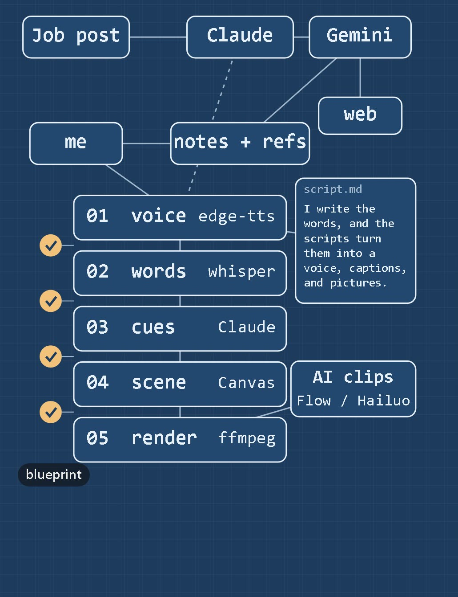
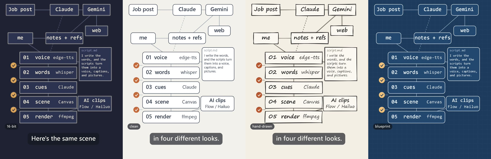

1080x1920 · 60.0 s · sound on · 8.3 MB (full-quality file: 15.1 MB)
How this video was made
A 60-second reel that explains its own pipeline. The voice, captions, diagrams and physics are drawn in code. The AI clips came from free sites, and everything that worked is below with the exact prompt.
Finished
Beyond the reel: two thought-experiment clips (real sim, then a realistic version) and the lens beat.
Light clock on a train
The real sim, then an AI photo of the same idea. The AI photo is labelled as a miss: no mirrors at the ends.
Sim (relativity) → Leonardo Lucid Realism still 1080x1920 · 9.2 s · silent · 1.6 MBPrompt (prompt for the AI still)
Photorealistic interior of a modern passenger train carriage at night, speeding past blurred station lights outside the windows. In the middle of the aisle stands a tall clear glass column with a flat mirror at the top and a flat mirror at the bottom, one metre apart; a single thin bright beam of light travels straight up and down between the two mirrors. Cinematic, physically plausible, no text, no people.
Convex security mirror
The real sim, then an AI photo that gets it right: upright, smaller, wider view.
Sim (mirror) → Ideogram 4.5 still 1080x1920 · 9.2 s · silent · 2.7 MBPrompt (prompt for the AI still)
Photorealistic photo of a round convex security mirror mounted high at the corner of an underground parking garage. The mirror shows a small, upright, wide-angle reflection of the whole garage, curving at the edges; a red car in the reflection looks small and right-side up. Natural light, sharp focus, documentary style, no text.
Lens beat: sim into a real photo
A 2.6 s cut from the reel. The sim's inverted image morphs into a real photo of a glass orb focusing a candle.
Cut from the reel, 32.3 s in 1080x1920 · 2.6 s · sound on · 0.3 MB
How it's made
The reel's own pipeline diagram, in the four looks the video wipes through.

voice · edge-ttsin: the script. out: one voice track, 57.65 s (en-US-BrianNeural).
words · whisperin: the voice. out: a time for every word; all 150 of 150 script words matched.
cues · Claudein: the word times. out: scene cues anchored to phrases, not fixed seconds, so a new voice still lines up.
scene · Canvasin: cues, AI clips, stills, sim frames. out: every 1080x1920 frame, drawn in code.
render · ffmpegin: frames and voice. out: the 60 s video, h264 + aac.

Showroom
Every raw AI take that came out right, as downloaded. Sound is the original; press play. Open "Prompt" for the exact words. The takes that missed are on their own page.
Beam bends through the lens and meets at one point on the card.
Google Flow · Veo 3.1 Quality · 9:16 · 8 s · 400 credits per 4-take run · no visible watermark (SynthID is invisible) 720x1280 · 8.0 s · sound on · 1.6 MBPrompt (alternate prompt)
Macro shot of a round glass lens in a dark, slightly hazy room. A beam of warm light shines through the lens; the visible rays bend and meet at one bright point on a white card behind it. Fine dust glitters in the beam, Tyndall effect. Slow push-in toward the bright point. Low-key lighting, shallow depth of field, cinematic, photorealistic.
Take 2
Rays converge to a point, soft bokeh.
Google Flow · Veo 3.1 Quality · 9:16 · 8 s · 400 credits per 4-take run · no visible watermark (SynthID is invisible) 720x1280 · 8.0 s · sound on · 1.9 MBPrompt (alternate prompt)
Macro shot of a round glass lens in a dark, slightly hazy room. A beam of warm light shines through the lens; the visible rays bend and meet at one bright point on a white card behind it. Fine dust glitters in the beam, Tyndall effect. Slow push-in toward the bright point. Low-key lighting, shallow depth of field, cinematic, photorealistic.
Take 3
Beam through the lens, push-in to a flare.
Google Flow · Veo 3.1 Quality · 9:16 · 8 s · 400 credits per 4-take run · no visible watermark (SynthID is invisible) 720x1280 · 8.0 s · sound on · 1.3 MBPrompt (alternate prompt)
Macro shot of a round glass lens in a dark, slightly hazy room. A beam of warm light shines through the lens; the visible rays bend and meet at one bright point on a white card behind it. Fine dust glitters in the beam, Tyndall effect. Slow push-in toward the bright point. Low-key lighting, shallow depth of field, cinematic, photorealistic.
Take 4
Bright point on the card, green lens flare.
Google Flow · Veo 3.1 Quality · 9:16 · 8 s · 400 credits per 4-take run · no visible watermark (SynthID is invisible) 720x1280 · 8.0 s · sound on · 1.6 MBPrompt (alternate prompt)
Macro shot of a round glass lens in a dark, slightly hazy room. A beam of warm light shines through the lens; the visible rays bend and meet at one bright point on a white card behind it. Fine dust glitters in the beam, Tyndall effect. Slow push-in toward the bright point. Low-key lighting, shallow depth of field, cinematic, photorealistic.
Mug product shot
Handle and stripe stay stable; the light band sweeps across, steam rises.
Hailuo AI · MiniMax H3 · 9:16 · 768p · 5 s · 35 of 70 free credits · watermark "MINIMAX | Hailuo AI", bottom-right 768x1344 · 5.2 s · sound on · 0.6 MBPrompt (prompt)
Studio product shot: a matte off-white ceramic mug with one thin burnt-orange stripe stands on a pale warm-grey seamless backdrop. A soft band of light slowly sweeps across the mug from left to right, and a faint wisp of steam rises. Slow, gentle push-in at table height. Minimal and quiet, cool grey-blue shadows, clean commercial look, sharp focus, photorealistic.
Hailuo AI · GPT Image 2.5 Sunburst · 9:16 · High · 2K · 80 of 150 free credits for the 4 · watermark "MINIMAX | Hailuo AI", bottom-right 3.9 MBPrompt (prompt)
Submitted with two edits: the camera sentence became "A soft band of daylight falls across the cover from the left." and "Plain cover with no writing, no text, no logo." was added.
Studio still life: a closed off-white hardcover notebook with a thin burnt-orange ribbon bookmark and a slim slate-navy pen lying beside it, on a pale warm-grey seamless surface. A soft band of daylight slowly slides across the cover from left to right. The camera holds almost still with a very slow push-in. Minimal, quiet, clean commercial look, cool grey-blue shadows, sharp focus, photorealistic.
Hailuo AI · GPT Image 2.5 Sunburst · 9:16 · High · 2K · 80 of 150 free credits for the 4 · watermark "MINIMAX | Hailuo AI", bottom-right 4.2 MBPrompt (prompt)
Submitted with two edits: the camera sentence became "A soft band of daylight falls across the cover from the left." and "Plain cover with no writing, no text, no logo." was added.
Studio still life: a closed off-white hardcover notebook with a thin burnt-orange ribbon bookmark and a slim slate-navy pen lying beside it, on a pale warm-grey seamless surface. A soft band of daylight slowly slides across the cover from left to right. The camera holds almost still with a very slow push-in. Minimal, quiet, clean commercial look, cool grey-blue shadows, sharp focus, photorealistic.
Hailuo AI · GPT Image 2.5 Sunburst · 9:16 · High · 2K · 80 of 150 free credits for the 4 · watermark "MINIMAX | Hailuo AI", bottom-right 4.4 MBPrompt (prompt)
Submitted with two edits: the camera sentence became "A soft band of daylight falls across the cover from the left." and "Plain cover with no writing, no text, no logo." was added.
Studio still life: a closed off-white hardcover notebook with a thin burnt-orange ribbon bookmark and a slim slate-navy pen lying beside it, on a pale warm-grey seamless surface. A soft band of daylight slowly slides across the cover from left to right. The camera holds almost still with a very slow push-in. Minimal, quiet, clean commercial look, cool grey-blue shadows, sharp focus, photorealistic.
Hailuo AI · GPT Image 2.5 Sunburst · 9:16 · High · 2K · 80 of 150 free credits for the 4 · watermark "MINIMAX | Hailuo AI", bottom-right 4.1 MBPrompt (prompt)
Submitted with two edits: the camera sentence became "A soft band of daylight falls across the cover from the left." and "Plain cover with no writing, no text, no logo." was added.
Studio still life: a closed off-white hardcover notebook with a thin burnt-orange ribbon bookmark and a slim slate-navy pen lying beside it, on a pale warm-grey seamless surface. A soft band of daylight slowly slides across the cover from left to right. The camera holds almost still with a very slow push-in. Minimal, quiet, clean commercial look, cool grey-blue shadows, sharp focus, photorealistic.
Small, upright, wide-angle reflection, as the physics says.
Ideogram · 4.5 · High · 9:16 · 2K · Magic Prompt off · 10 of 30 free credits · no watermark 0.7 MBPrompt (prompt)
Photorealistic photo of a round convex security mirror mounted high at the corner of an underground parking garage. The mirror shows a small, upright, wide-angle reflection of the whole garage, curving at the edges; a red car in the reflection looks small and right-side up. Natural light, sharp focus, documentary style, no text.
Leonardo · Lucid Realism · Fast · 9:16 · 34 tokens per 4 images (36 with a reference) · no watermark 0.2 MBPrompt (prompt)
Photorealistic photo of a round convex security mirror mounted high at the corner of an underground parking garage. The mirror shows a small, upright, wide-angle reflection of the whole garage, curving at the edges; a red car in the reflection looks small and right-side up. Natural light, sharp focus, documentary style, no text.
Reads as a convex mirror; red car small and upright inside.
Leonardo · Lucid Realism · Fast · 9:16 · 34 tokens per 4 images (36 with a reference) · no watermark 0.4 MBPrompt (prompt)
Same prompt plus the sim diagram frame as a Content Reference, strength High.
Photorealistic photo of a round convex security mirror mounted high at the corner of an underground parking garage. The mirror shows a small, upright, wide-angle reflection of the whole garage, curving at the edges; a red car in the reflection looks small and right-side up. Natural light, sharp focus, documentary style, no text.
Leonardo · Lucid Realism · Fast · 9:16 · 34 tokens per 4 images (36 with a reference) · no watermark 0.4 MBPrompt (prompt)
Same prompt plus the sim diagram frame as a Content Reference, strength High.
Photorealistic photo of a round convex security mirror mounted high at the corner of an underground parking garage. The mirror shows a small, upright, wide-angle reflection of the whole garage, curving at the edges; a red car in the reflection looks small and right-side up. Natural light, sharp focus, documentary style, no text.